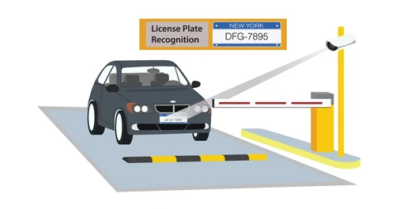
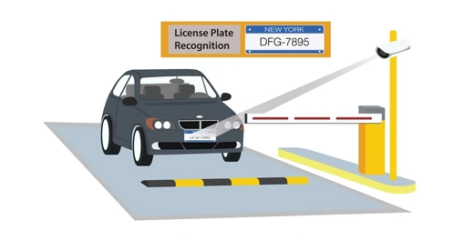

Overview
This Python-based system uses OpenCV and Tesseract OCR to detect and recognize car number plates in real-time. If the recognized number matches an entry in the authorized list, the gate is automatically unlocked. Ideal for smart parking, residential automation, and security systems.
- 🔍 Real-time vehicle license plate detection via webcam
- 🧠 OCR-based number recognition using Tesseract
- ✅ Matches with authorized plates
- 🔓 Simulated gate unlock/lock mechanism
- 💾 Captures and saves plate images for logging
- 📁 Modular code design with expandability
 

Future Improvements
- 🖥️ GUI using Tkinter or PyQt
- 🤖 Deep learning model (YOLO or EasyOCR) for better accuracy
- 🔌 Integration with Raspberry Pi/Arduino for hardware gate control
- 🗃️ CSV logging of access events
- 📱 Admin mobile app for managing access